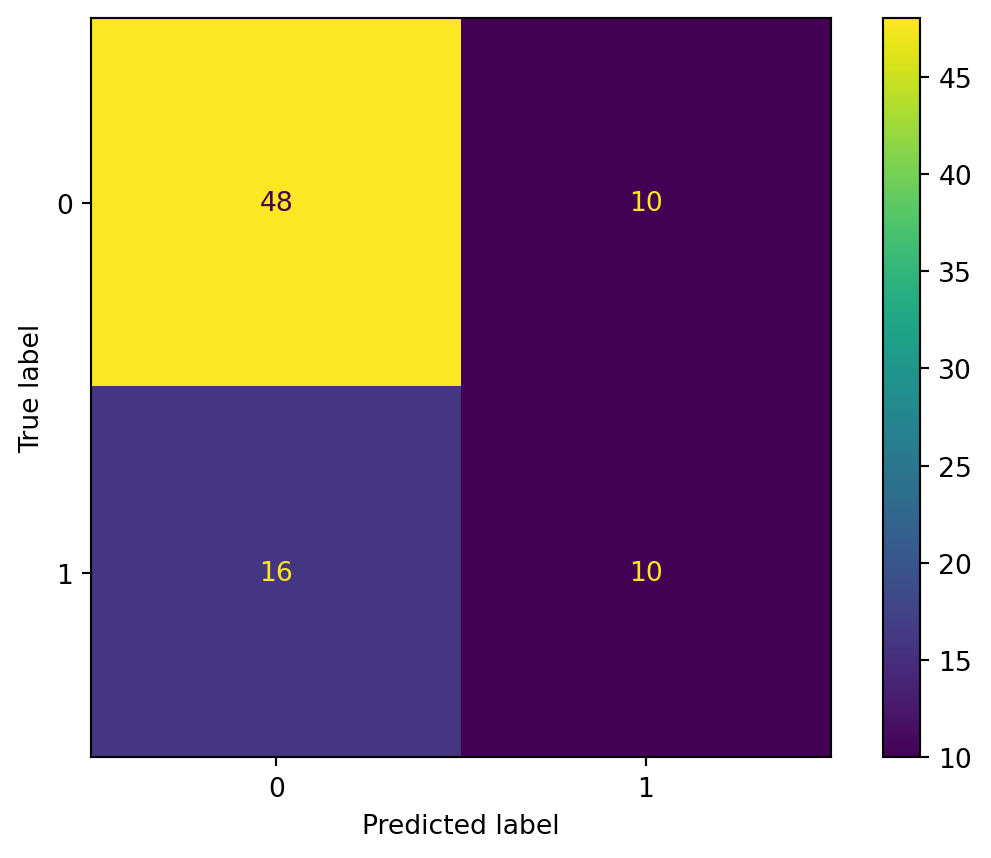
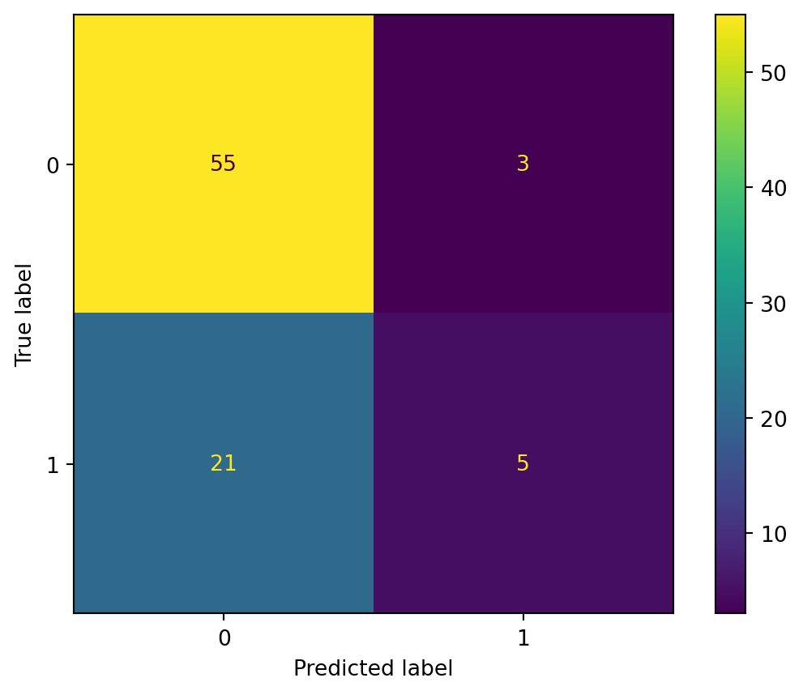

import sklearn
from sklearn import datasets
import numpy as np
import pandas as pd
import seaborn as sns
import matplotlib.pyplot as plt
from sklearn.metrics import accuracy_score
from sklearn.metrics import precision_score
from sklearn.metrics import recall_score
from sklearn.metrics import confusion_matrixClassification with Support Vector Machines
Methods
For our analysis below, we will be using sentences gathered from various Wikipedia pages for searches that related to the keywords “Women’s rights” and “Men’s rights” to classify specific sentences with either of the two search terms.
Imports
Load Data
df = pd.read_csv('../../../data/00-raw-data/wiki-crawl-results.csv')Feature Selection
Re-format data
First, we conduct some preprocessing on the text data. We separate results from Wikipedia pages for “Women’s rights” and “Men’s rights” and vectorize the text results.
from sklearn.feature_extraction.text import CountVectorizer
#CONVERT FROM STRING LABELS TO INTEGERS
labels=[]; #y1=[]; y2=[]
y1=[]
for label in df["label"]:
if label not in labels:
labels.append(label)
print("index =",len(labels)-1,": label =",label)
for i in range(0,len(labels)):
if(label==labels[i]):
y1.append(i)
y1=np.array(y1)
# CONVERT DF TO LIST OF STRINGS
corpus=df["text"].to_list()
y2=df["sentiment"].to_numpy()index = 0 : label = Women's rights
index = 1 : label = Men's rightsVectorize
# INITIALIZE COUNT VECTORIZER
# minDF = 0.01 means "ignore terms that appear in less than 1% of the documents".
# minDF = 5 means "ignore terms that appear in less than 5 documents".
vectorizer=CountVectorizer(min_df=0.001,max_features=10000,stop_words="english")
# RUN COUNT VECTORIZER ON OUR COURPUS
Xs = vectorizer.fit_transform(corpus)
X=np.array(Xs.todense())
#CONVERT TO ONE-HOT VECTORS
maxs=np.max(X,axis=0)
X=np.ceil(X/maxs)
vocab0 = vectorizer.vocabulary_After vectorizing our text data, we reorder our dataframe to sort the words in decreasing order based on its frequency and do some additional quality of life formatting changes.
#swap keys and values (value --> ley)
vocab1 = dict([(value, key) for key, value in vocab0.items()])
#RE-ORDER COLUMN SO IT IS SORTED FROM HIGH FREQ TERMS TO LOW
# https://stackoverflow.com/questions/60758625/sort-pandas-dataframe-by-sum-of-columns
df2=pd.DataFrame(X)
s = df2.sum(axis=0)
df2=df2[s.sort_values(ascending=False).index[:]]
# REMAP DICTIONARY TO CORRESPOND TO NEW COLUMN NUMBERS
print()
i1=0
vocab2={}
for i2 in list(df2.columns):
# print(i2)
vocab2[i1]=vocab1[int(i2)]
i1+=1
df2.columns = range(df2.columns.size)
x=df2.to_numpy()Class Distribution
Numerical EDA
As shown in the output below, our target class is heavily imbalanced. Since this imbalance can skew the way the data is split into training and test sets, we will later stratify the data so the proportion of values in the training and test sets also reflect this imbalance.
# DOUBLE CHECK
print("x shape:", x.shape)
print("y1 shape:", y1.shape)
print(np.unique(y1, return_counts=True))x shape: (420, 9792)
y1 shape: (420,)
(array([0, 1]), array([291, 129], dtype=int64))Baseline: Random Classifier
In order to have some baseline to compare our SVM’s performance, we defined a random classifier below.
Define Random Classifier Function
from collections import Counter
from sklearn.metrics import precision_recall_fscore_support
def random_classifier(y_data):
ypred=[];
max_label=np.max(y_data); #print(max_label)
for i in range(0,len(y_data)):
ypred.append(int(np.floor((max_label+1)*np.random.uniform(0,1))))
print("-----RANDOM CLASSIFIER-----")
print("count of prediction:",Counter(ypred).values()) # counts the elements' frequency
print("probability of prediction:",np.fromiter(Counter(ypred).values(), dtype=float)/len(y_data)) # counts the elements' frequency
print("accuracy",accuracy_score(y_data, ypred))
print("precision, recall, fscore,",precision_recall_fscore_support(y_data, ypred))
random_classifier(y1)-----RANDOM CLASSIFIER-----
count of prediction: dict_values([239, 181])
probability of prediction: [0.56904762 0.43095238]
accuracy 0.5095238095238095
precision, recall, fscore, (array([0.73480663, 0.33891213]), array([0.45704467, 0.62790698]), array([0.56355932, 0.44021739]), array([291, 129], dtype=int64))Based on the output above, we can see that accuracy of the random classifier is around 0.5, which is around what we’d expect from randomly taking guesses for 2 target classes. We can also see that the precision, recall, and f-scores from the random classifier are around 0.7, 0.5, and 0.6, respectively.
Feature Selection (cont.)
First, we split the text data. We split by index here so we have the same rows being used every time we run the code below. This is to remove noise created by full randomization with data splitting, which changes up what rows are used each time.
Split Data (number of features)
import random
N=X.shape[0]
l = [*range(N)] # indices
cut = int(0.8 * N) #80% of the list
random.shuffle(l) # randomize
train_index = l[:cut] # first 80% of shuffled list
test_index = l[cut:] # last 20% of shuffled list
print(train_index[0:10])
print(test_index[0:10])[4, 10, 36, 223, 23, 162, 16, 345, 246, 234]
[14, 144, 161, 224, 302, 212, 131, 276, 32, 265]Helper Functions
##UTILITY FUNCTION TO INITIALIZE RELEVANT ARRAYS
def initialize_arrays():
global num_features,train_accuracies
global test_accuracies,train_time,eval_time
num_features=[]
train_accuracies=[]
test_accuracies=[]
train_time=[]
eval_time=[]from sklearn.svm import SVC
from sklearn.metrics import accuracy_score
import time
def train_SVC_model(X,Y,kernel='linear',i_print=False):
if(i_print):
print(X.shape,Y.shape)
print(type(X),type(Y))
#SPLIT
x_train=X[train_index]
y_train=Y[train_index].flatten()
x_test=X[test_index]
y_test=Y[test_index].flatten()
# INITIALIZE MODEL
model = SVC(kernel=kernel)
# TRAIN MODEL
start = time.process_time()
model.fit(x_train,y_train)
time_train=time.process_time() - start
# LABEL PREDICTIONS FOR TRAINING AND TEST SET
start = time.process_time()
yp_train = model.predict(x_train)
yp_test = model.predict(x_test)
time_eval=time.process_time() - start
acc_train= accuracy_score(y_train, yp_train)*100
acc_test= accuracy_score(y_test, yp_test)*100
if(i_print):
print(acc_train,acc_test,time_train,time_eval)
return (acc_train,acc_test,time_train,time_eval)# DEFINE SEARCH FUNCTION
def partial_grid_search(num_runs, min_index, max_index):
for i in range(1, num_runs+1):
# SUBSET FEATURES
upper_index=min_index+i*int((max_index-min_index)/num_runs)
xtmp=x[:,0:upper_index]
#TRAIN
(acc_train,acc_test,time_train,time_eval)=train_SVC_model(xtmp,y1,i_print=False)
if(i%5==0):
print(i,upper_index,xtmp.shape[1],acc_train,acc_test)
#RECORD
num_features.append(xtmp.shape[1])
train_accuracies.append(acc_train)
test_accuracies.append(acc_test)
train_time.append(time_train)
eval_time.append(time_eval)#UTILITY FUNCTION TO PLOT RESULTS
def plot_results():
#PLOT-1
plt.plot(num_features,train_accuracies,'-or')
plt.plot(num_features,test_accuracies,'-ob')
plt.xlabel('Number of features')
plt.ylabel('ACCURACY: Training (blue) and Test (red)')
plt.show();
# #PLOT-2
plt.plot(num_features,train_time,'-or')
plt.plot(num_features,eval_time,'-ob')
plt.xlabel('Number of features')
plt.ylabel('Runtime: training time (red) and evaluation time(blue)')
plt.show();
# #PLOT-3
plt.plot(np.array(test_accuracies),train_time,'-or')
plt.plot(np.array(test_accuracies),eval_time,'-ob')
plt.xlabel('test_accuracies')
plt.ylabel('Runtime: training time (red) and evaluation time (blue)')
plt.show();
# #PLOT-3
plt.plot(num_features,np.array(train_accuracies)-np.array(test_accuracies),'-or')
plt.xlabel('Number of features')
plt.ylabel('train_accuracies-test_accuracies')
plt.show();Next, we perform feature selection for the various SVM kernels, using the default SVM parameters (which will be optimized later on as well). The main metrics for determining the optimal number of features that will be used for analysis are the training and test accuracies and runtimes for varying number of features.
Linear Kernel Feature Selection
#linear
(acc_train,acc_test,time_train,time_eval)=train_SVC_model(x,y1,'linear',i_print=True)
initialize_arrays()
# DENSE SEARCH (SMALL NUMBER OF FEATURES (FAST))
partial_grid_search(num_runs=100, min_index=0, max_index=1000)
# SPARSE SEARCH (LARGE NUMBER OF FEATURES (SLOWER))
partial_grid_search(num_runs=20, min_index=1000, max_index=10000)
plot_results()(420, 9792) (420,)
<class 'numpy.ndarray'> <class 'numpy.ndarray'>97.61904761904762 82.14285714285714 0.71875 0.65625
5 50 50 86.01190476190477 75.0
10 100 100 93.45238095238095 75.0
15 150 150 96.13095238095238 72.6190476190476220 200 200 97.02380952380952 83.33333333333334
25 250 250 97.02380952380952 83.33333333333334
30 300 300 97.61904761904762 79.7619047619047735 350 350 97.61904761904762 79.76190476190477
40 400 400 97.61904761904762 79.7619047619047745 450 450 97.61904761904762 79.76190476190477
50 500 500 97.61904761904762 80.9523809523809555 550 550 97.61904761904762 79.76190476190477
60 600 600 97.61904761904762 78.5714285714285765 650 650 97.61904761904762 78.5714285714285770 700 700 97.61904761904762 76.1904761904761975 750 750 97.61904761904762 78.5714285714285780 800 800 97.61904761904762 79.7619047619047785 850 850 97.61904761904762 83.3333333333333490 900 900 97.61904761904762 83.3333333333333495 950 950 97.61904761904762 80.95238095238095100 1000 1000 97.61904761904762 82.142857142857145 3250 3250 97.61904761904762 83.3333333333333410 5500 5500 97.61904761904762 83.3333333333333415 7750 7750 97.61904761904762 82.1428571428571420 10000 9792 97.61904761904762 82.14285714285714
Based on the plots above, the optimal number of features for the linear kernel seems to be around 3000. This range of features is where the test set accuracy seems to plateau, and it is also the point directly before runtime begins to increase significantly.
Gaussian Kernel Feature Selection
#gaussian
(acc_train,acc_test,time_train,time_eval)=train_SVC_model(x,y1,'rbf',i_print=True)
initialize_arrays()
# DENSE SEARCH (SMALL NUMBER OF FEATURES (FAST))
partial_grid_search(num_runs=100, min_index=0, max_index=1000)
# SPARSE SEARCH (LARGE NUMBER OF FEATURES (SLOWER))
partial_grid_search(num_runs=20, min_index=1000, max_index=10000)
plot_results()(420, 9792) (420,)
<class 'numpy.ndarray'> <class 'numpy.ndarray'>97.61904761904762 69.04761904761905 0.640625 1.421875
5 50 50 86.01190476190477 75.0
10 100 100 93.45238095238095 75.0
15 150 150 96.13095238095238 72.6190476190476220 200 200 97.02380952380952 83.33333333333334
25 250 250 97.02380952380952 83.33333333333334
30 300 300 97.61904761904762 79.7619047619047735 350 350 97.61904761904762 79.76190476190477
40 400 400 97.61904761904762 79.7619047619047745 450 450 97.61904761904762 79.76190476190477
50 500 500 97.61904761904762 80.9523809523809555 550 550 97.61904761904762 79.76190476190477
60 600 600 97.61904761904762 78.57142857142857
65 650 650 97.61904761904762 78.5714285714285770 700 700 97.61904761904762 76.1904761904761975 750 750 97.61904761904762 78.5714285714285780 800 800 97.61904761904762 79.7619047619047785 850 850 97.61904761904762 83.3333333333333490 900 900 97.61904761904762 83.3333333333333495 950 950 97.61904761904762 80.95238095238095100 1000 1000 97.61904761904762 82.142857142857145 3250 3250 97.61904761904762 83.3333333333333410 5500 5500 97.61904761904762 83.3333333333333415 7750 7750 97.61904761904762 82.1428571428571420 10000 9792 97.61904761904762 82.14285714285714
Based on the plots above, the optimal number of features for the gaussian kernel seems to be around 3000. This range of features is where the test set accuracy seems to plateau, and it is also the point directly before runtime begins to increase significantly.
Sigmoid Kernel Feature Selection
#sigmoid
(acc_train,acc_test,time_train,time_eval)=train_SVC_model(x,y1,'sigmoid',i_print=True)
initialize_arrays()
# DENSE SEARCH (SMALL NUMBER OF FEATURES (FAST))
partial_grid_search(num_runs=100, min_index=0, max_index=1000)
# SPARSE SEARCH (LARGE NUMBER OF FEATURES (SLOWER))
partial_grid_search(num_runs=20, min_index=1000, max_index=10000)
plot_results()(420, 9792) (420,)
<class 'numpy.ndarray'> <class 'numpy.ndarray'>94.64285714285714 78.57142857142857 0.5625 0.59375
5 50 50 86.01190476190477 75.0
10 100 100 93.45238095238095 75.0
15 150 150 96.13095238095238 72.6190476190476220 200 200 97.02380952380952 83.33333333333334
25 250 250 97.02380952380952 83.33333333333334
30 300 300 97.61904761904762 79.7619047619047735 350 350 97.61904761904762 79.76190476190477
40 400 400 97.61904761904762 79.7619047619047745 450 450 97.61904761904762 79.76190476190477
50 500 500 97.61904761904762 80.9523809523809555 550 550 97.61904761904762 79.76190476190477
60 600 600 97.61904761904762 78.5714285714285765 650 650 97.61904761904762 78.5714285714285770 700 700 97.61904761904762 76.1904761904761975 750 750 97.61904761904762 78.5714285714285780 800 800 97.61904761904762 79.7619047619047785 850 850 97.61904761904762 83.3333333333333490 900 900 97.61904761904762 83.3333333333333495 950 950 97.61904761904762 80.95238095238095100 1000 1000 97.61904761904762 82.142857142857145 3250 3250 97.61904761904762 83.3333333333333410 5500 5500 97.61904761904762 83.3333333333333415 7750 7750 97.61904761904762 82.1428571428571420 10000 9792 97.61904761904762 82.14285714285714

Based on the plots above, the optimal number of features for the sigmoid kernel seems to be around 3000. This range of features is where the test set accuracy seems to plateau, and it is also the point directly before runtime begins to increase significantly.
Polynomial Kernel Feature Selection
#polynomial
(acc_train,acc_test,time_train,time_eval)=train_SVC_model(x,y1,'poly',i_print=True)
initialize_arrays()
# DENSE SEARCH (SMALL NUMBER OF FEATURES (FAST))
partial_grid_search(num_runs=100, min_index=0, max_index=1000)
# SPARSE SEARCH (LARGE NUMBER OF FEATURES (SLOWER))
partial_grid_search(num_runs=20, min_index=1000, max_index=10000)
plot_results()(420, 9792) (420,)
<class 'numpy.ndarray'> <class 'numpy.ndarray'>86.30952380952381 65.47619047619048 0.65625 0.875
5 50 50 86.01190476190477 75.0
10 100 100 93.45238095238095 75.0
15 150 150 96.13095238095238 72.61904761904762
20 200 200 97.02380952380952 83.33333333333334
25 250 250 97.02380952380952 83.3333333333333430 300 300 97.61904761904762 79.76190476190477
35 350 350 97.61904761904762 79.7619047619047740 400 400 97.61904761904762 79.76190476190477
45 450 450 97.61904761904762 79.7619047619047750 500 500 97.61904761904762 80.95238095238095
55 550 550 97.61904761904762 79.7619047619047760 600 600 97.61904761904762 78.5714285714285765 650 650 97.61904761904762 78.5714285714285770 700 700 97.61904761904762 76.1904761904761975 750 750 97.61904761904762 78.5714285714285780 800 800 97.61904761904762 79.7619047619047785 850 850 97.61904761904762 83.3333333333333490 900 900 97.61904761904762 83.3333333333333495 950 950 97.61904761904762 80.95238095238095100 1000 1000 97.61904761904762 82.142857142857145 3250 3250 97.61904761904762 83.3333333333333410 5500 5500 97.61904761904762 83.3333333333333415 7750 7750 97.61904761904762 82.1428571428571420 10000 9792 97.61904761904762 82.14285714285714


Based on the plots above, the optimal number of features for the polynomial kernel seems to be around 3000. This range of features is where the test set accuracy seems to plateau, and it is also the point directly before runtime begins to increase significantly.
Split Data (model selection)
# PARTITION THE DATASET INTO TRAINING AND TEST SETS
from sklearn.model_selection import train_test_split
test_ratio=0.2
x_train, x_test, y_train, y_test = train_test_split(X[:, :3000], y1, test_size=test_ratio, random_state=0, stratify=y1)
y_train=y_train.flatten()
y_test=y_test.flatten()accuracy_training_l = []
accuracy_test_l = []Model Tuning
There are multiple algorithms, or kernels, used by SVMs in performing classification. We will perform classification using linear, Gaussian, Sigmoid, and polynomial kernels, compare their performance, and choose the best kernel for this task.
Train Linear Kernel
from sklearn.svm import SVC
model = SVC(kernel='linear')
model = model.fit(x_train, y_train)Check the Results
# USE THE MODEL TO MAKE PREDICTIONS FOR THE TRAINING AND TEST SET
yp_train = model.predict(x_train)
yp_test = model.predict(x_test)
accuracy_training_l.append(accuracy_score(y_train, yp_train))
accuracy_test_l.append(accuracy_score(y_test, yp_test))# GENERATES A CONFUSION MATRIX PLOT AND PRINTS MODEL PERFORMANCE METRICS
def confusion_plot(y_data, y_pred):
cm = confusion_matrix(y_data, y_pred)
disp = ConfusionMatrixDisplay(confusion_matrix=cm)
disp.plot()
print('ACCURACY:', accuracy_score(y_data, y_pred))
print('RECALL:', recall_score(y_data, y_pred, average='weighted'))
print('PRECISION:', precision_score(y_data, y_pred, average='weighted'))
plt.show()
from sklearn.metrics import confusion_matrix, ConfusionMatrixDisplayprint("------TRAINING (Linear)------")
confusion_plot(y_train,yp_train)
print("------TEST (Linear)------")
confusion_plot(y_test,yp_test)------TRAINING (Linear)------
ACCURACY: 0.9732142857142857
RECALL: 0.9732142857142857
PRECISION: 0.9746372543385817------TEST (Linear)------
ACCURACY: 0.6904761904761905
RECALL: 0.6904761904761905
PRECISION: 0.6726190476190477
The linear kernel resulted in training accuracy, recall, and precision scores of 0.97 and test accuracy, recall, and precision scores of 0.70. This suggests a noticeable degree of overfitting.
Train Gaussian Kernel
model = SVC(kernel='rbf')
model = model.fit(x_train, y_train)Check the Results
# USE THE MODEL TO MAKE PREDICTIONS FOR THE TRAINING AND TEST SET
yp_train = model.predict(x_train)
yp_test = model.predict(x_test)
accuracy_training_l.append(accuracy_score(y_train, yp_train))
accuracy_test_l.append(accuracy_score(y_test, yp_test))print("------TRAINING (Gaussian)------")
confusion_plot(y_train,yp_train)
print("------TEST (Gaussian)------")
confusion_plot(y_test,yp_test)------TRAINING (Gaussian)------
ACCURACY: 0.9672619047619048
RECALL: 0.9672619047619048
PRECISION: 0.9676962479003086------TEST (Gaussian)------
ACCURACY: 0.6904761904761905
RECALL: 0.6904761904761905
PRECISION: 0.6347270615563299
The Gaussian kernel resulted in training accuracy, recall, and precision scores of around 0.97 and test accuracy and recall scores of around 0.69 and precision score of around 0.63. This suggests a higher degree of overfitting than the linear kernel with worse accuracy.
Train Sigmoid Kernel
model = SVC(kernel='sigmoid')
model = model.fit(x_train, y_train)Check the Results
# USE THE MODEL TO MAKE PREDICTIONS FOR THE TRAINING AND TEST SET
yp_train = model.predict(x_train)
yp_test = model.predict(x_test)
accuracy_training_l.append(accuracy_score(y_train, yp_train))
accuracy_test_l.append(accuracy_score(y_test, yp_test))print("------TRAINING (Sigmoid)------")
confusion_plot(y_train,yp_train)
print("------TEST (Sigmoid)------")
confusion_plot(y_test,yp_test)------TRAINING (Sigmoid)------
ACCURACY: 0.8601190476190477
RECALL: 0.8601190476190477
PRECISION: 0.8799707770729229------TEST (Sigmoid)------
ACCURACY: 0.7142857142857143
RECALL: 0.7142857142857143
PRECISION: 0.6931390977443609
The Sigmoid kernel resulted in training accuracy, recall, and precision scores of around 0.86 and test accuracy and recall scores of about 0.71, and a precision score of around 0.7. This suggests a noticeable degree of overfitting but better performance than the previous Gaussian kernel.
Polynomial Kernel Hyperparameter Tuning
For the polynomial kernel, it is necessary to determine the degree of the polynomial. As such, we compare the accuracy for the training and test sets based on polynomial degrees ranging from 1 to 10. As the graph below shows, the best performance for both the training and test sets appears to be a polynomial degree of 1.
accuracies_train = []
accuracies_test = []
numbers = range(1, 11)
for i in numbers:
model = SVC(kernel='poly', degree = i)
model.fit(x_train, y_train)
yp_train = model.predict(x_train)
yp_test = model.predict(x_test)
cm_train = confusion_matrix(y_train, yp_train)
ac_train = accuracy_score(y_train, yp_train)
cm_test = confusion_matrix(y_test, yp_test)
ac_test = accuracy_score(y_test, yp_test)
print('degree', ': ', 'training acc' , ',', 'test acc')
print(i, ": ", ac_train, ',', ac_test)
accuracies_train.append(ac_train)
accuracies_test.append(ac_test)
plt.plot(numbers, accuracies_train, linewidth=1, color='b')
plt.scatter(numbers, accuracies_train, c='b')
plt.plot(numbers, accuracies_test, linewidth=1, color='r')
plt.scatter(numbers, accuracies_test, c='r')
plt.xlabel("Polynomial Degree")
plt.ylabel("ACCURACY: Training (blue) and Test (red)")
plt.style.use('fivethirtyeight')
plt.show();
plt.style.use('default')degree : training acc , test acc
1 : 0.9494047619047619 , 0.7380952380952381degree : training acc , test acc
2 : 0.8660714285714286 , 0.6904761904761905degree : training acc , test acc
3 : 0.8392857142857143 , 0.6904761904761905degree : training acc , test acc
4 : 0.8303571428571429 , 0.6904761904761905degree : training acc , test acc
5 : 0.8184523809523809 , 0.6904761904761905degree : training acc , test acc
6 : 0.8184523809523809 , 0.6904761904761905degree : training acc , test acc
7 : 0.8184523809523809 , 0.6904761904761905degree : training acc , test acc
8 : 0.8184523809523809 , 0.6904761904761905degree : training acc , test acc
9 : 0.8095238095238095 , 0.6904761904761905degree : training acc , test acc
10 : 0.8095238095238095 , 0.6904761904761905Train Polynomial Kernel
model = SVC(kernel = 'poly', degree = 1)
model = model.fit(x_train, y_train)Check the Results
# USE THE MODEL TO MAKE PREDICTIONS FOR THE TRAINING AND TEST SET
yp_train = model.predict(x_train)
yp_test = model.predict(x_test)
accuracy_training_l.append(accuracy_score(y_train, yp_train))
accuracy_test_l.append(accuracy_score(y_test, yp_test))print("------TRAINING (Polynomial; degree=1)------")
confusion_plot(y_train,yp_train)
print("------TEST (Polynomial; degree=1)------")
confusion_plot(y_test,yp_test)------TRAINING (Polynomial; degree=1)------
ACCURACY: 0.9494047619047619
RECALL: 0.9494047619047619
PRECISION: 0.949361359126984------TEST (Polynomial; degree=1)------
ACCURACY: 0.7380952380952381
RECALL: 0.7380952380952381
PRECISION: 0.7298584298584297The Polynomial kernel resulted in training accuracy, recall, and precision scores of around 0.95 and test accuracy, recall, and precision scores of about 0.74. This suggests a noticeable degree of overfitting and a relatively similar performance to the Sigmoid kernel.
Comparing Models
To make comparison simpler, we create a plot for the accuracy scores of the four kernel types. The graph below shows that all four kernels have relatively similar degrees of training performance; however, the linear kernel appears to have the best test set accuracy.
kernel_types = ['Linear', 'Gaussian', 'Sigmoid', 'Polynomial']
d = {"Kernels": kernel_types, "Training Accuracy": accuracy_training_l, "Test Accuracy": accuracy_test_l}
df = pd.DataFrame(d)
df = df.sort_values(by=["Test Accuracy"], ascending=False)ax = df.plot(kind='bar', color=['b', 'r'])
plt.ylabel('Accuracy')
plt.xlabel('Kernel Types')
plt.title('Accuracy Scores for the Four Kernel Types')
plt.xticks(rotation = 0)
ax.set_xticklabels(df['Kernels'])[Text(0, 0, 'Polynomial'),
Text(1, 0, 'Sigmoid'),
Text(2, 0, 'Linear'),
Text(3, 0, 'Gaussian')]Hyperparameter Tuning
Now, to find the best margin (C) for the linear kernel, we perform a grid search.
from sklearn.model_selection import GridSearchCV
# defining parameter range
param_grid = {'C': [2**-7, 2**-6, 2**-5, 2**-4, 2**-3, 2**-2, 2**-1, 1, 2**1, 2**2, 2**3, 2**4, 2**5, 2**6, 2**7],
'kernel': ['linear']}
grid = GridSearchCV(SVC(), param_grid, refit = True)
# fitting the model for grid search
grid.fit(x_train, y_train)GridSearchCV(estimator=SVC(),
param_grid={'C': [0.0078125, 0.015625, 0.03125, 0.0625, 0.125,
0.25, 0.5, 1, 2, 4, 8, 16, 32, 64, 128],
'kernel': ['linear']})from sklearn.metrics import classification_report
# print best parameter after tuning
print(grid.best_params_){'C': 0.125, 'kernel': 'linear'}Train Optimal Model
model = SVC(kernel=grid.best_params_['kernel'], C=grid.best_params_['C'])
model = model.fit(x_train, y_train)
yp_train = model.predict(x_train)
yp_test = model.predict(x_test)print("------TRAINING------")
confusion_plot(y_train,yp_train)
print("------TEST------")
confusion_plot(y_test,yp_test)------TRAINING------
ACCURACY: 0.9732142857142857
RECALL: 0.9732142857142857
PRECISION: 0.9746372543385817------TEST------
ACCURACY: 0.6785714285714286
RECALL: 0.6785714285714286
PRECISION: 0.6565066512434934The confusion matrices for all four kernal types show marginally better performance for accuracy, recall, and precision scores for both the training and test sets compared to the performance of the baseline random classifier. Among these kernels, we also determined that the linear kernel outperformed the other three in terms of accuracy, recall, and precision scores for both the training and test sets; however, based on the results from the above confusion matrix, it still appears that the “optimal” hyperparameters still result in a noticeable degree of overfitting.